USB JTAG/serial debug unit
This is the ESP32-S3 for the display, touch, rotary ring, Wi-Fi and RoonPilot firmware.
A fast, tactile Roon remote for the Waveshare ESP32-S3 Knob Touch LCD 1.8. No server bridge, companion app or additional service is required; optional IR hardware control can be enabled when a zone needs it.
Start directly in the Web Installer. In the device chooser, the name before the parentheses is what matters; Device Manager and System Information are not required.Current firmware: 1.0.2. The documentation already covers the upcoming 2.0.0 version and IR Bridge. New firmware and the Bridge installer follow with the release.
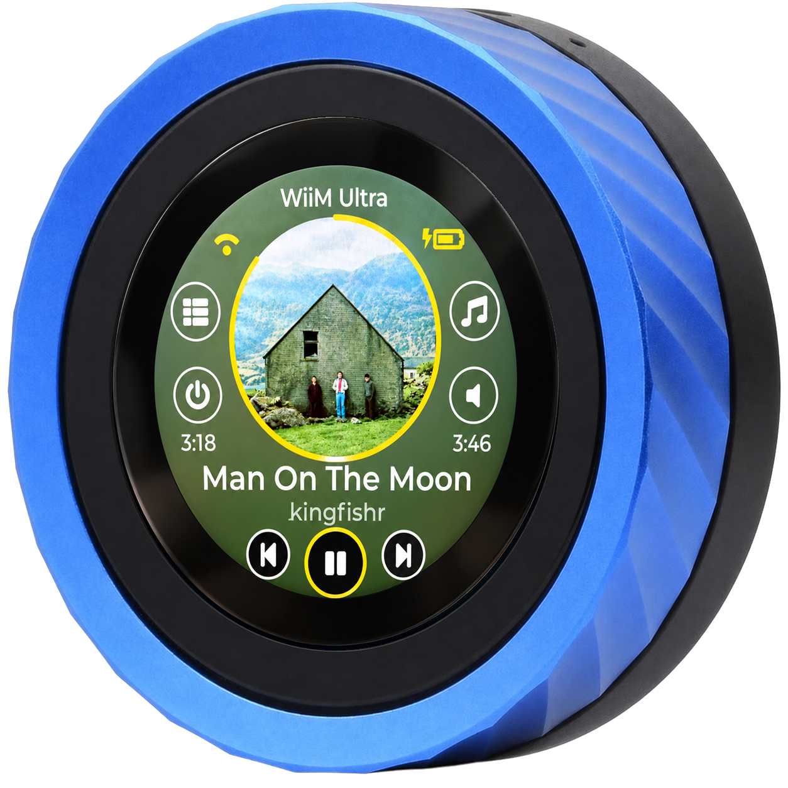
Personal hobby project · no business model
RoonPilot was created for the enjoyment of music, technology and building something useful—not as a commercial venture. There are no advertisements, subscriptions or hidden costs. RoonPilot does not transmit personal, usage or telemetry data to the developer or any third party.
Support and discussion: use the Roon Community Forum thread or GitHub Issues.
Anyone who would voluntarily like to say thank you for the time and effort invested:
Send Me a CoffeeIn the Web Installer's device chooser, simply read the name before the parentheses. The additional COM… or cu.usbmodem… value may differ.
This is the ESP32-S3 for the display, touch, rotary ring, Wi-Fi and RoonPilot firmware.
This is the separate classic companion processor, not the target of the main RoonPilot installer.
01
The browser handles device selection; no operating-system tool is needed beforehand.
A charge-only cable can power the display but cannot transfer firmware.
Use Chrome or Edge, enable the confirmations and start installation. The device chooser then opens.
Select USB JTAG/serial debug unit for RoonPilot. COM… or cu.usbmodem… appears only as additional information in parentheses.
For USB serial, leave the chooser open, unplug USB, turn the USB-C plug by 180 degrees and reconnect it. The browser refreshes the choice immediately.
02
The Web Installer shows the correct USB entry directly in its chooser.
When asked, confirm Erase device. No separate erase is needed beforehand.
Keep USB connected until erase, write and verification are complete.
Later updates run directly from RoonPilot under System → Firmware update and normally preserve settings.
Browser: current desktop Chromium with Web Serial only. Device choice: the name before the parentheses is what matters. The chooser can stay open while USB is disconnected, turned and reconnected.
03
Normal updates no longer require a USB cable.
04
A clean factory image contains no private Wi-Fi or Roon data.
Connect to RoonPilot-Setup-XXXXXX. If the captive page does not open, visit 192.168.4.1.
Select or enter your 2.4 GHz network and save the password locally on the device.
Use the address shown by your router or the device. No Internet account is required.
In Roon, open Settings → Extensions and enable RoonPilot by Senior Coder.
If several Roon Servers are found, choose the intended one. A fixed local IP can be entered when discovery is blocked.
Select the primary zone and hide rooms that should not appear on the device.
05
Fast physical control, a considered round interface and complete local configuration.
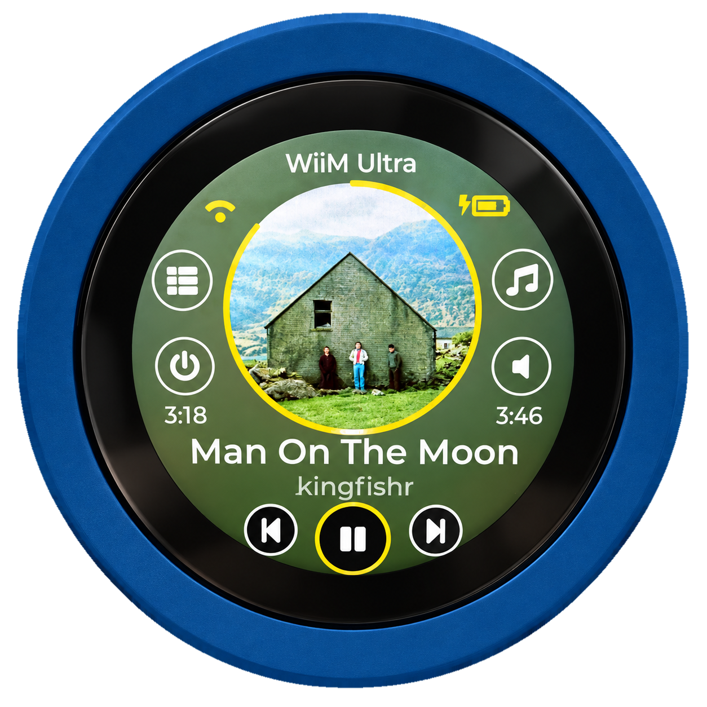
Turn the full outer ring for volume. RoonPilot automatically follows dimensionless, dB and relative outputs without inventing a unit. Tap, swipe or hold the capacitive display for playback and device controls.
Turn · tap · double-tap · swipe · hold
Volume, transport, zone selection, Quick Settings, control lock, immediate display-off and wake-up are available directly on the device.
Read the complete device controlsOpen the current Classic reference at full size
| Action | Starting point | Result |
|---|---|---|
| Turn the outer ring | Single zone | Changes volume through the native Roon or IR route saved for that zone. |
| Turn the first detent | Roon group | Opens the group mixer without changing a level. Keep turning to control the whole group, or tap a large member row and then turn to control only that output. |
| Tap a visible button | Player | Operates Previous, Play/Pause, Next or an enabled side shortcut for Playlist, Live Radio, Power or Mute. |
| Tap the zone name | Player | Opens the zone picker. |
| Swipe left/right | Player | Moves to the next/previous track. |
| Swipe up | Player | Opens Quick Settings. |
| Hold the centre for about 1.2 s | Player | Locks or unlocks all controls. |
| Double-tap the centre | Large Play/Pause area off | Switches the display completely off immediately. |
| Short-tap the large centre | Optional Play/Pause area on | Toggles playback in all four player layouts. Visible buttons retain priority; the area remains invisible and is off by default. |
| First touch or ring detent | Black display | Wakes only the display. Music and volume are left unchanged. |
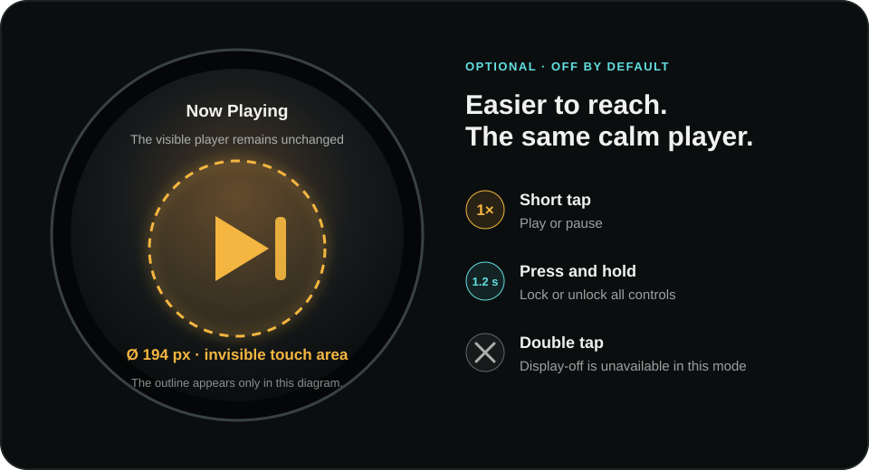
The responsive local interface manages RoonPilot directly from the same network and switches together with the device display between English and German.
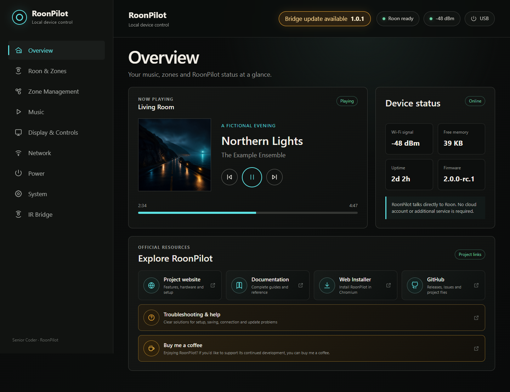
06
RoonPilot preserves the volume route of every group member instead of treating unlike devices as one anonymous endpoint.
No extra on-screen button
A Roon group may combine a native numeric endpoint, a real dB endpoint, relative Roon volume and several IR-controlled devices. RoonPilot sends the correct command to each physical output and displays every result in its honest unit—such as 48, −35.0 dB and IR +2 side by side.
Tap a generously sized member row to adjust only that output. Tap the group heading to return to the complete group. The mixer closes automatically after eight seconds of inactivity.
Read the complete group guide


It opens the mixer without changing volume—even when it also wakes a black display.
The round display shows three selectable members; whole-group control still processes every eligible output.
One BLE path and several authenticated Wi-Fi paths can serve the same active Roon group.
One offline route does not silently move to another Bridge or stop healthy group members.
07
RoonPilot remains the only user interface while a small ESP32-S3 Bridge reproduces the original infrared commands beside the audio hardware.
One firmware, optional hardware
Each physical Roon output independently selects native Roon volume, an external IR Bridge/profile or deliberately disabled volume. Up to four Bridge pairings can be saved. Automatic zone control follows the selected zone and, for a Roon group, monitors and operates every Bridge required by its members.
Pairing and all sensitive provisioning start over encrypted Bluetooth LE. Authenticated local Wi-Fi is optional for another room and is preferred for a confirmed firmware transfer. Pairing, profiles, learning, routing, diagnostics, backup and signed A/B updates are all managed by RoonPilot—there is no separate Bridge app, cloud account or everyday web page.
Example: WiiM Ultra and RME ADI-2 DAC. Playback continues through Roon and WiiM, while the ring sends learned RME volume commands. The DAC performs its own hardware level change and retains Auto Ref Level instead of substituting Roon digital attenuation.
Explore the complete IR Bridge project
Record Volume up/down, Mute and separate Power on/off commands twice, then test them on the equipment.
Mix Roon, external IR and disabled volume, each with its own ring step and optional Power/Mute controls.
BLE remains preferred while healthy; authenticated Wi-Fi extends reach and avoids slow firmware transfer.
Switch Bridge & Bluetooth off and restart: no Bluetooth, scans, Bridge traffic or Bridge update checks start.


RoonPilot talks directly to Roon on your local network. The optional IR Bridge is hardware control at the equipment—not a required host or cloud service.
08
RoonPilot targets the Waveshare ESP32-S3-Knob-Touch-LCD-1.8, not a generic round ESP32 display.
Looking for the device? Choose the exact Waveshare model; blue and black variants come with or without a battery. Marketplace listings do not guarantee local dispatch.
09
Four supplied STL parts hold RoonPilot at a comfortable angle while the mounting photographs document the connector position inside the cradle.
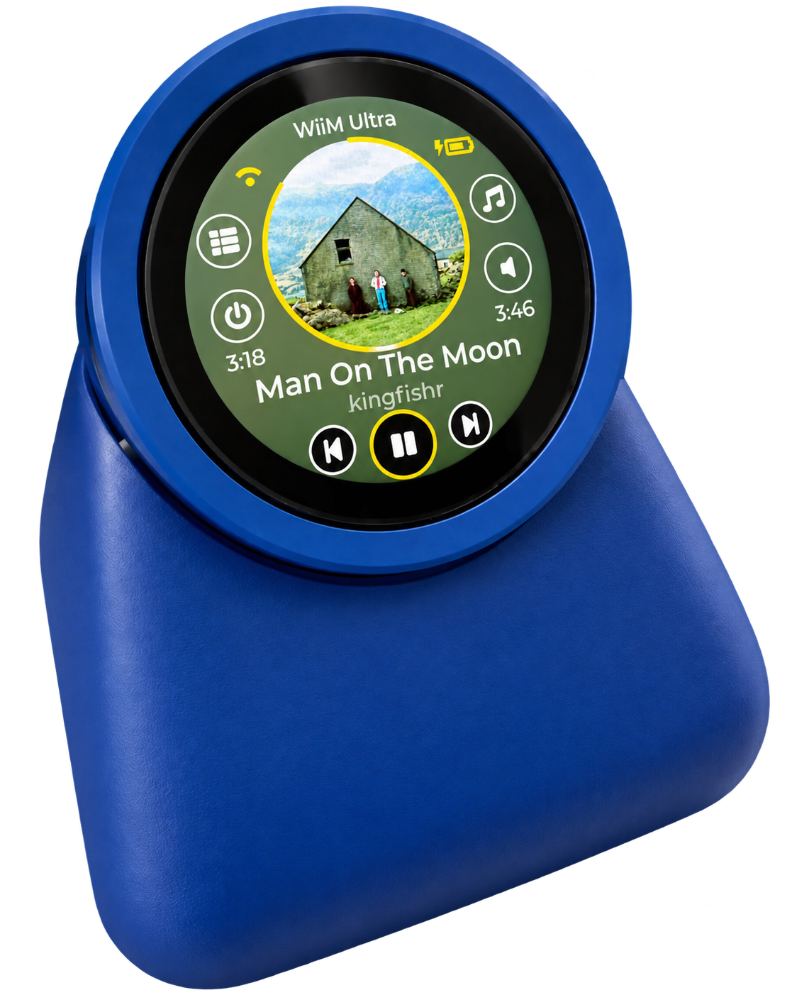
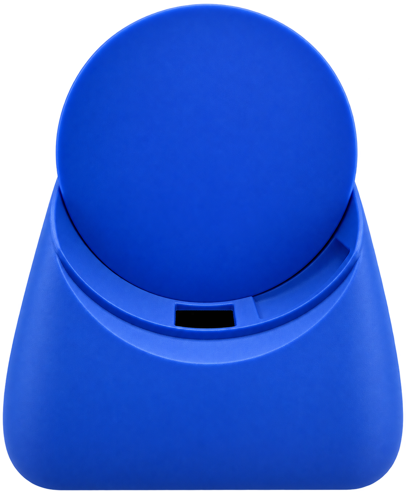
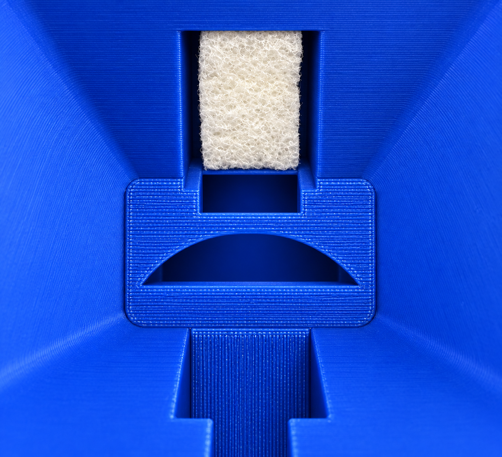
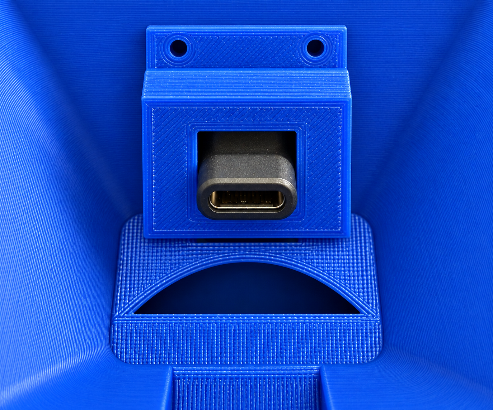
Optional 3D-print project
The model does not change RoonPilot and is not needed for operation. A thin foam strip selected for the firmness of the material guides the right-angle magnetic USB-C coupler from below without locking it rigidly. The holder above it is secured removably with two small screws so the coupler can be aligned without mechanical stress.
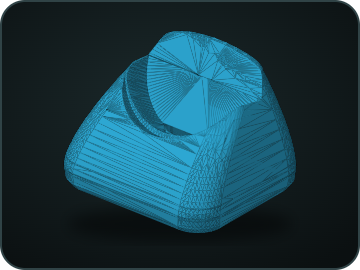
dock_body.stlMain stand · print once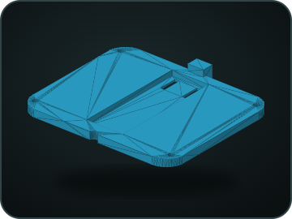
dock_bottom_cover.stlBottom cover · print once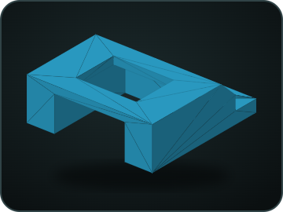
halter.stlUSB-C holder · print once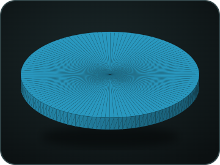
rueckwand.stlRear panel · print onceUse a USB-C cable with a short connector housing whenever possible. A long or rigid plug can transfer cable tension to the movably supported magnetic coupler. The prototype's right-angle magnetic USB-C coupler is secured in its holder with only two small screws; gluing it is not recommended because later adjustment may be necessary.
10
Start with the guide for your computer. Explore groups, Bridges and printable accessories when you need them.
Use BOOT/RESET only when automatic USB connection fails. Never rotate the plug and flash the second processor as a troubleshooting guess.
If 2.0.0 does not work for you, use the fixed 1.0.2 USB recovery. It erases RoonPilot settings and profiles. Keep backups separate and do not run battery calibration under 1.0.2. Read the full instructions.